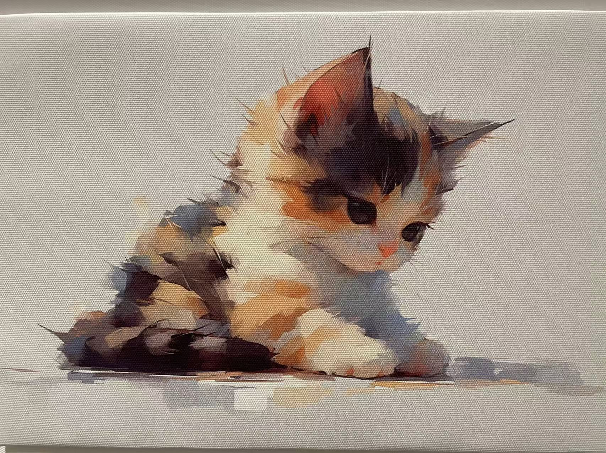

A LITTLE SOFTNESSHOME / 01

随便看看EXPLORE MY SPACE
A LITTLE ABOUT ME
每一段经历，
都成为我。
你好，我是 Zheyu Deng。
这是我的个人空间，也是慢慢记录自己的地方。
THE JOURNEY SO FAR
学习，尝试，
继续向前。
把经历串成一条线，看见成长的轨迹。
简历正在整理中
详细经历和 PDF 简历将在这里更新。
01
教育经历Education
待补充
02
实践经历Experience
待补充
03
项目与技能Projects & skills
待补充
LIFE, IN LITTLE MOMENTS
日常里，
也有小小的宇宙。
留一点空间，给风景、灵感和普通的一天。
A COLLECTION IN THE MAKING
To be continued.故事，慢慢发生。
生活记录即将在这里展开。